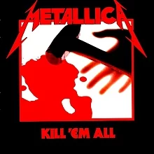
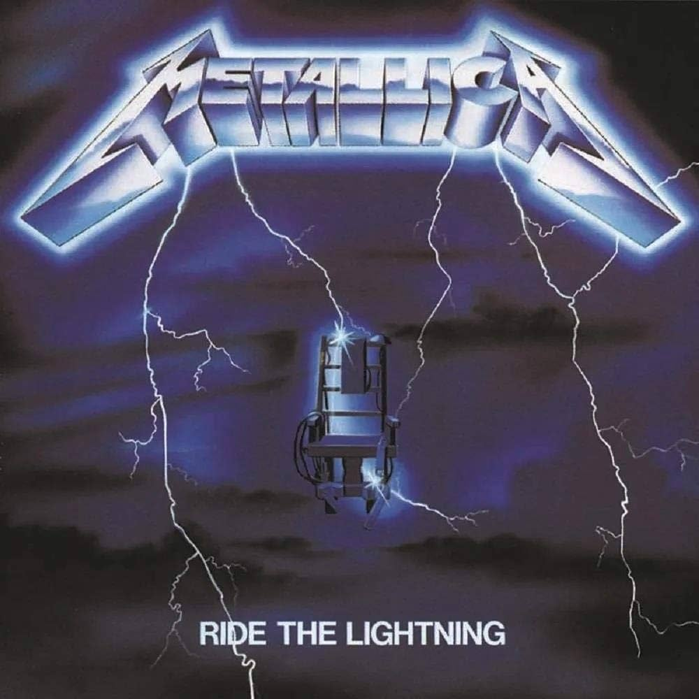
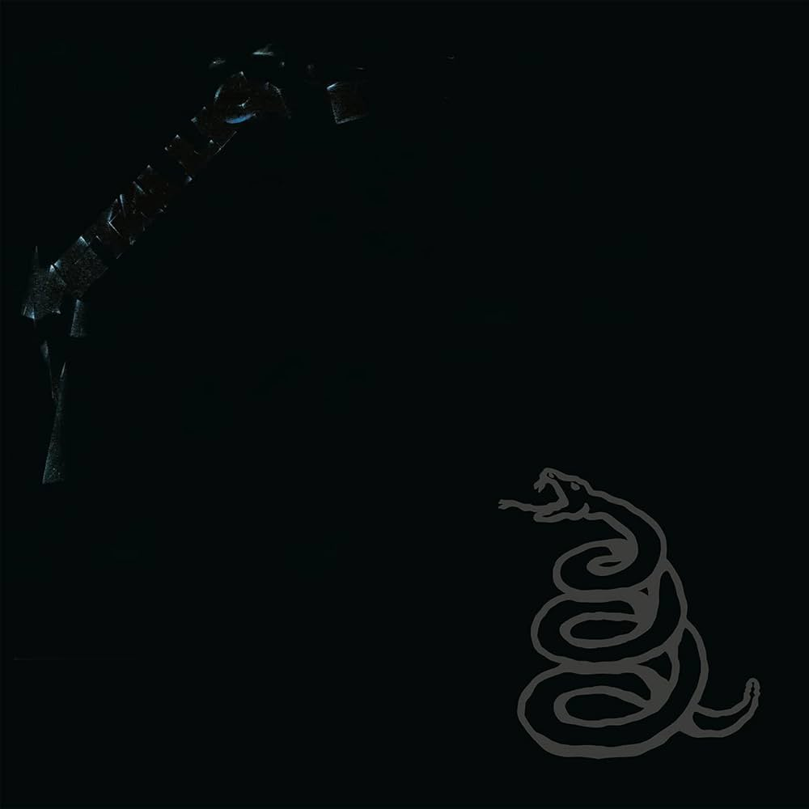

|
|
 |
 |
 |
O Metallica é uma das bandas de heavy metal mais influentes e bem-sucedidas de todos os tempos. Formada em 1981, em Los Angeles, Califórnia, a banda é composta por membros como James Hetfield (vocal e guitarra rítmica), Lars Ulrich (bateria), Kirk Hammett (guitarra solo) e Robert Trujillo (baixo).
A história do Metallica começou quando Lars Ulrich colocou um anúncio em um jornal local procurando por músicos para formar uma banda de heavy metal. James Hetfield, que estava interessado em criar uma banda de rock pesado, respondeu ao anúncio. A partir desse encontro, os dois formaram a base da banda e começaram a recrutar outros membros.
Em 1983, o Metallica lançou seu álbum de estreia, "Kill 'Em All", que é amplamente considerado um dos álbuns mais influentes da história do metal. Com músicas como "Seek & Destroy" e "Whiplash", o álbum apresentou ao mundo a energia crua e a agressividade característica da banda.
|  |
No ano seguinte, o Metallica lançou seu segundo álbum, "Ride the Lightning", que consolidou sua posição como uma das principais bandas de metal da época. O álbum incluiu músicas como "For Whom the Bell Tolls" e "Fade to Black", que demonstraram a versatilidade e o talento musical da banda.
|  |
Em 1986, o Metallica lançou seu terceiro álbum, "Master of Puppets", que é frequentemente citado como um dos melhores álbuns de metal de todos os tempos. Com músicas épicas como "Battery" e a faixa-título "Master of Puppets", o álbum solidificou a reputação do Metallica como mestres do gênero.
 |
No entanto, a trajetória ascendente da banda foi interrompida por uma tragédia em 1986, quando o baixista original Cliff Burton morreu em um acidente de ônibus durante a turnê de "Master of Puppets". A morte de Burton foi um golpe devastador para a banda, mas eles decidiram continuar, recrutando Jason Newsted como novo baixista.
Em 1991, o Metallica lançou o seu quinto álbum de estúdio autointitulado, também conhecido como "The Black Album", que se tornou um fenômeno mundial. Com hits como "Enter Sandman", "The Unforgiven" e "Nothing Else Matters", o álbum levou o Metallica para um público ainda maior e se tornou um dos álbuns mais vendidos de todos os tempos.
|  |
A partir daí, o Metallica continuou a lançar álbuns de sucesso e a se apresentar em turnês esgotadas em todo o mundo. No entanto, a banda também enfrentou desafios ao longo dos anos, incluindo controvérsias, mudanças na formação e problemas pessoais dos membros.
Apesar de tudo, o Metallica permanece uma força dominante no mundo do metal, continuando a inspirar gerações de fãs com sua música poderosa e sua dedicação à arte. Sua influência é sentida em toda a cena do metal, e seu legado perdurará por muitos anos.